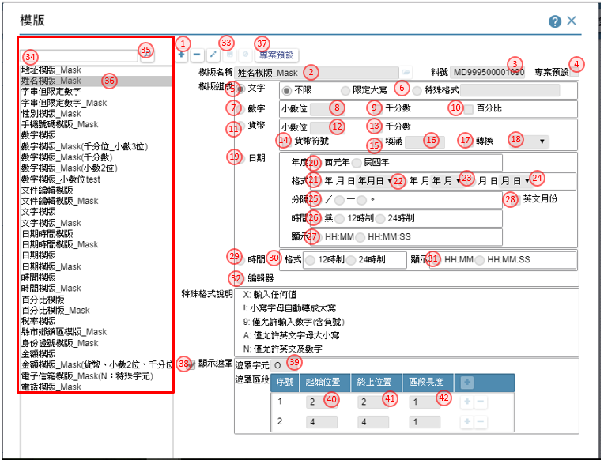

如如-智慧軟體機器人
如如-智慧軟體機器人
IDE操作手冊 16 專案資源
- 16.1 資料模版
- 16.2 多語設定
- 16.3 圖示設定
- 16.4 交換格式
- 16.5 排程設定
- 16.6 報表條文
- 16.7 啟動表單
- 16.8 外部程式
- 16.9 開放按鍵
- 16.10 檔案櫃
- 16.11 全域變數
- 16.12 單元樣式
- 16.13 自訂函數
16.1 資料模版
作業目的：為了使每個表單元件可以根據資料類型顯示適當的格式，所以需設定整個專案中需要用到的模版，以便在設定元件規格時可以套用。
參考資料：℗文件 
- 新增鍵：可利用本鍵，進入新增模式
- 模版名稱：可利用開窗鍵, 開啟【多語詞庫】指定挑選詞庫, 來指定模版的名稱，操作方法請參考［16.2］
- 料號：顯示模版的料號
- 專案預設：顯示駐留的模版料號, 是否為專案預設
- 模版組成_文字：選擇本項, 表示欄位內容, 是以文字方式處理
不限：表示不限制文字內容
限定大寫：表示限定文字必須是英文字母必大寫
特殊格式：表示文字套用特殊格式 - 特殊格式：指定特殊格式的編碼原則:
X:輸入任何值
!:小寫字母自動轉成大寫
9:僅允許輸入數字(含負號)
A:僅允許英文字母大小寫
N:僅允許英文及數字 - 模版組成_數字：選擇本項, 表示欄位內容, 是以數字方式處理
- 數字_小數位數：在數字模式下, 輸入小數位數
- 數字_千分比：勾選是否出現千分位符號
- 百分比：勾選是否為百分比模式, 若勾選者, 會在欄位出現%符號
- 模版組成_貨幣：選擇本項, 表示欄位內容, 是以貨幣方式處理
- 貨幣_小數位數：在貨幣模式下, 輸入小數位數
- 貨幣_千分比：勾選是否為百分比模式, 若勾選者, 會在欄位出現%符號
- 符號：勾選是否出現貨幣符號
- 填滿：勾選在不滿欄位長度時, 是否符號填補
- 填滿符號：勾選在填滿欄位時, 輸入填補的符號
- 轉換：勾選是否轉換其它表現模式
- 轉換類別：在指定轉換的狀態下, 下拉選擇：國字金額／英文金額的型態
- 模版組成_日期：選擇本項, 表示欄位內容, 是以日期方式處理
- 日期年度：選擇年度的型態=西元年／民國年
- 日期內容：日期模式下, 選擇日期的出現的內容=年月日／年月／月日
- 年月日格式：選擇年月日的格式=年月日／月日年／日月年
- 年月格式：選擇年月格式時，挑選內容＝年月／月年
- 月日：選擇月日格式時，挑選內容＝月日／日月
- 日期分隔符號：日期的分隔符號，挑選內容＝／—。
- 時間內容：選擇是否帶有時間, 選擇內容＝無／12時制／24時制
- 時間格式：若有帶有時間, 選擇格式＝ＨＨ：ＭＭ／ＨＨ：ＭＭ：ＳＳ
- 英文月份：指定是否帶有英文月份顯示
- 模版組成_時間：選擇本項, 表示欄位內容, 是以時間方式處理
- 時間內容：選擇是否帶有時間, 選擇內容＝無／12時制／24時制
- 時間格式：若有帶有時間, 選擇格式＝ＨＨ：ＭＭ／ＨＨ：ＭＭ：ＳＳ
- 模版組成_編輯器：選擇本項, 表示欄位內容, 是以編輯器的方式處理
- 儲存鍵：可利用本鍵，儲存內容到資料庫
- 關鍵字：輸入指定的關鍵字，以方便搜尋查詢
- 搜尋鍵：濾出符合關鍵字的內容到速查清單
- 速查清單：經由搜尋鍵查出符合關鍵字的內容清單，可駐留指定記錄，查詢進而編修內容
- 專案預設鍵：指定駐留的模版料號, 專案預設；作用於產生新元件加註時的預設值
- 顯示遮罩：勾選是否呈現遮罩效果
- 遮罩字元：輸入要呈現的遮罩樣式
- 遮罩區段_起始位置：輸入要呈現的遮罩起始位置
- 遮罩區段_終止位置：輸入要呈現的遮罩終止位置
- 遮罩區段_區段長度：依照輸入遮罩區段，系統自動計算出長度、碼數
16.2 多語設定
作業目的：當系統的使用者有不同國家的成員時，需使用此功能管理專案的多語言。

- 新增鍵：可利用本鍵，進入新增模式
- 詞彙說明：輸入本多語庫的用途描述
- 料號：顯示料號
- 語系碼：系統依據專案使用的多語內容，載入列表
- 語系名稱：顯示語系的名稱
- 文字內容：輸入本詞彙在不同語系的用語，新增時預設為詞彙說明
- 儲存鍵：儲存鍵：系統檢查以下項目，通過後儲存內容到資料庫。
- 儲存鍵：可利用本鍵，儲存內容到資料庫
- 關鍵字：輸入指定的關鍵字，以方便搜尋查詢
- 速查清單：經由搜尋鍵查出符合關鍵字的內容清單，可駐留指定記錄，查詢進而編修內容
- 使用來源鍵：利用本按鍵，找出使用本詞彙的相關物件
- 類別：使用本詞彙的物件的類別
- 名稱：使用本詞彙的物件的名稱
- 連結鍵鍵：點選本鍵時，可開啟連結開啟到該物件所設定的操作介面
16.3 圖示設定
功能說明：有些客戶需要顯示自己公司的標誌，或是想在系統中顯示指定的圖案，則需使用此功能。
參考資料：℗文件

- 新增鍵：可利用本鍵，進入新增模式
- 圖示名稱：可利用開窗鍵, 開啟【多語詞庫】指定挑選詞庫, 來指定圖示的名稱請參考［16.2］
- 圖示用途：指定本圖示的用途
按鍵：表示圖示的用途在於功能按鈕
樹枝：表示圖示的用途在於樹狀節點
公司LOGO：表示圖示的用途在於公司LOGO
表單：表示圖示的用途在於表單底圖 - 圖片大小：圖片的寛度及高度，對於用途為樹技或按鍵的圖示，本寛度為單一小圖示的大小。
- 圖檔名稱：顯示上傳的圖檔名稱
- 選擇檔案鍵：點選本按鈕, 開啟檔案管, 挑選檔案
- 檢視鍵：在有上傳圖示的狀態下，可利用本按鍵檢視圖示內容
- 下載鍵：在有上傳圖示的狀態下，可利用本按鍵下載圖示內容
- 圖片原則：說明圖片用途及限制
- 儲存：可利用本鍵，儲存內容到資料庫
- 關鍵字：濾出符合關鍵字的內容到速查清單
- 搜尋鍵：經由搜尋鍵查出符合關鍵字的內容清單，可駐留指定記錄，查詢進而編修內容
- 速查清單：經由搜尋鍵查出符合關鍵字的內容清單，可駐留指定記錄，查詢進而編修內容
16.4 交換格式
作業目的：需要將系統的資料以檔案的方式輸出時，此功能可讓系統能依照設定的格式，將資料匯出至txt檔、Excel檔，或是由txt檔、Excel檔匯入資料。

- 新增鍵：可利用本鍵，進入新增模式
- 格式名稱：可利用開窗鍵, 開啟【多語詞庫】指定挑選詞庫, 請參考［16.2］來指定格式的名稱
- 料號：顯示料號
- 檔案類型：下拉指定檔案的格式Excel / XML /Text 格式
- 檔案格式：檔案的格式 xlsx / xls
- 限定檔名：選擇交換時, 是否指定檔案名稱, 選擇：否／是
- 限定檔案名稱：在限定檔名的狀態下, 輸入檔案名稱
- 查表定義：勾選本項者，表示在執行資料交換時，再由介面決定檔名
- 範本附件：指定本格式是否有範本上傳， 選擇：否／是
- 範本附件名稱：在指定範本附件的狀態下, 上傳檔案，經由選擇檔案, 開檔案總管, 挑選檔案
- 下載範本鍵：經由本按鈕, 將範本檔案下載
- 記錄＿明細型：指定交換內容的格式類型, 選擇本項表示為明細型
- 首行標題：明細型格式, 不為excel格式時, 指定首行是否為標題， 選擇：否／是
- 指定分頁：指定分頁方式， 選擇：頁籤名籤／頁次
- 頁籤名籤：在指定分頁=頁籤名籤的狀態下, 輸入頁籤名籤
- 頁次：在指定分頁=頁次的狀態下, 輸入頁次序號
- 標題_第N列：明細型格式, 指定格式參考標題的列次
- 資料_第N列：明細型格式, 指定格式資料起始的列次
- 匯入Excel鍵：可利用本鍵將上述指定的excel格式匯入欄位設定, 減少輸入時間
- 紀錄分隔符號：明細型格式, 不為excel格式時, 指定記錄分隔的符號
- 欄位分隔符號：格式excel格式時, 指定資料分隔的符號
- 文字辨視符號：格式excel格式時, 指定文字辨視的符號, 選擇：雙引號／單引號／無
- 表格型：指定交換內容的格式類型, 選擇本項表示=表格型
- 範本工作頁：表格型格式, 指定範本參考的頁次_第N頁
- 資料區塊1：勾選是否有區塊1
- 資料區塊1_範本區塊名稱：在指定區塊1的狀態下, 輸入資料區塊1的名稱
- 資料區塊2：勾選是否有區塊2
- 資料區塊2_範本區塊名稱：在指定區塊2的狀態下, 輸入資料區塊2的名稱
- 資料區塊3~5：同資料區塊1、2的作法
- 欄位設定：指定各進行資料交換的各欄位內容
- 名稱：輸入格式的欄位名稱
- 類型：輸入格式的資料型態，文字／數字／日期／圖片
- 模版：輸入格式的資料模版
- 長度：輸入格式的資料長度
- 圖寬：若格式為一圖片, 輸入圖片的寬度
- 圖高：若格式為一圖片, 輸入圖片的高度
- 位置：指定格式裡的欄位放置的區域
明細型：限定固定，不異動
表格型：可指定欄位是固定/變動/區塊1/區塊2/區塊3/區塊4//區塊1/區塊5
變動： 表示本欄位的顯示位置, 會因為資料區塊內的筆數而異動 - 定位/定義：指定格式裡的欄位, 放置的位置,
明細型＿固定：輸入欄位的順序, 1, 2,3..
表格型＿固定：輸入excel的儲存位置, A1, B2.
表格型＿區塊1~5：輸入excel的欄數, B,C,D.
表格型＿變動：輸入excel的儲存位置, A18, B25. - 直向合併：若格式上有直向合併的狀況或需求時，必須勾選本項
- 橫向合併：若格式上有橫向合併的狀況或需求時，必須勾選本項
- 合併欄位數：說明選合併儲存格的欄位或列數
- 儲存鍵：可利用本鍵，儲存內容到資料庫
- 關鍵字：輸入指定的關鍵字，以方便搜尋查詢
- 搜尋鍵：濾出符合關鍵字的內容到速查清單
- 速查清單：經由搜尋鍵查出符合關鍵字的內容清單，可駐留指定記錄，查詢進而編修內容
16.5 排程設定
作業目的：為了讓某些表單的功能，由系統自己定時處理，免去使用者的操作。
參考資料：℗文件

- 新增鍵：可利用本鍵，進入新增模式
- 排程名稱：可利用開窗鍵, 開啟【多語詞庫】指定挑選詞庫, 請參考［16.2］來指定排程的名稱
- 料號：顯示料號
- 排程方式＿單次：選擇執行的次數, 選擇本項, 表示僅執行一次
- 單次_指定日期：在執行單次的狀態下, 輸入執行的日期
- 單次_指定時間_時：在執行單次的狀態下, 輸入執行的起始時間及終止時間
- 排程方式＿週期性：選擇執行的次數, 選擇本項, 表示依週期指定執行
- 指定日期_起迄：指定週期的起始日期、結束日期
- 週期性_指定時間_時迄：在執行週期的日期期間內, 輸入執行的起始時間、終止時間
- 每隔N日：選擇週期的類別, 選擇本項表示隔日執行
- 每隔N日＿指定時：在指定每隔Ｎ日後的執行時間
- 每隔N日＿指定分：在指定每隔Ｎ日後的執行時間
- 每隔N週：選擇週期的類別, 選擇本項表示隔週執行
- 每隔N週_週數：指定間隔的週數
- 每隔N週_星期：在隔週執行的狀態下, 指定當週的執行的星期數
- 週期性_指定月份日期：選擇週期的類別, 選擇本項表示指定月份的當日執行
- 週期性_指定月份：勾選要指定的月份
- 週期性_指定月份日期_執行日：指定月份的執行的日期
- 週期性_指定月份星期：選擇週期的類別, 選擇本項表示指定月份的某週某日執行
- 週期性_指定月份：勾選要指定的月份
- 週期性_指定月份星期_週次：指定月份的執行的當月的第N週
- 週期性_指定月份星期_星期：指定月份的執行的當月的第N週
- 連續執行：本排程是否指定時間內，連續執行
- 連續執行_間隔時間：設定為連續執行者，指定間隔的分鐘數
- 連續執行_結束時：設定為連續執行者，指定結束的時間（時）
- 連續執行_結束分：設定為連續執行者，指定結束的時間（分）
- 儲存鍵：可利用本鍵，儲存內容到資料庫
- 關鍵字：輸入指定的關鍵字，以方便搜尋查詢
- 搜尋鍵：濾出符合關鍵字的內容到速查清單
- 速查清單：經由搜尋鍵查出符合關鍵字的內容清單，可駐留指定記錄，查詢進而編修內容
16.6 報表條文
作業目的：為了讓使用者自行設定報表表尾的格式。

- 新增鍵：可利用本鍵，進入新增模式
- 條文名稱：可利用開窗鍵, 開啟【多語詞庫】指定挑選詞庫, 請參考［16.2］來指定條文的名稱
- 料號：顯示料號
- 條文內容：輸入運用在報表上的條件文內容
- 儲存鍵：可利用本鍵，儲存內容到資料庫
- 關鍵字：輸入指定的關鍵字，以方便搜尋查詢
- 搜尋鍵：濾出符合關鍵字的內容到速查清單
- 速查清單：經由搜尋鍵查出符合關鍵字的內容清單，可駐留指定記錄，查詢進而編修內容
16.7 啟動表單
作業目的：讓使用者登入時，自動執行某些特定功能。
參考資料： ℗文件

- 新增鍵：可利用本鍵，進入新增模式
- 啟動說明：可利用開窗鍵, 開啟【多語詞庫】】指定挑選詞庫, 請參考［16.2］來指定啟動說明
- 料號：顯示料號
- 執行條件：可利用本鍵, 開啟【條件式】中, 指定執行的條件內容，操作說明請參考［附錄A1］
- 表單名稱：指定在符合條件下，啟動的表單名稱
- 參數：可利用本鍵, 開啟【表單傳遞參數】中, 指定表單的要傳遞的參數內容
- 過濾條件：可利用本鍵, 開啟【條件式】中, 指定表單的過濾條件，操作說明請參考［附錄A1］
- 新增條件鍵：可利用本鍵，增加條件的項目
- 儲存鍵：可利用本鍵，儲存內容到資料庫
- 關鍵字：輸入指定的關鍵字，以方便搜尋查詢
- 搜尋鍵：濾出符合關鍵字的內容到速查清單
- 速查清單：經由搜尋鍵查出符合關鍵字的內容清單，可駐留指定記錄，查詢進而編修內容
16.8 外部程式
作業目的：為了與外部系統做資料的交換，或是執行非ruRU IDE建立的程式。
參考資料：℗文件

- 新增鍵：可利用本鍵，進入新增模式
- API名稱：可利用開窗鍵, 開啟【多語詞庫】指定挑選詞庫, 請參考［16.2］來指定名稱
- 料號：顯示料號
- API類型：指定API的類型，可挑選：Http /Https /Web Service / WCF
- 程式名稱：輸入API程式的名稱
- 功能名稱：若程式有分段指定功能時，在此處輸入功能的名稱
- Url位置類別：指定外部程式的位址，是固定位置或變動指定
- Url位置：若位置為固定時，指定IP路徑，例：「http://123.456.789.123:80/」
- 程式說明：描述程式的用途及用法說明
- 傳遞參數：勾選者，表示有傳遞參數內容
- 傳遞參數欄位：當傳遞參數被勾選者，在此指定參數的內容
- 參數類別：指定類別，下拉挑選：Json/XML/Param 預設值為Json
- 參數名稱：輸入參數的名稱，API的參數要區分大小寫
- XML屬性：參數類別=XML者，須設定屬性：節點／屬性
- 資料：參數類別=XML者，指定本參數是否有資料的對應；勾選者表示有
- 多筆：參數類別=XML且屬性＝節點者，指定本節點是否有多筆的狀況；勾選者表示有
- 參數型態：下拉挑選參數的類別
- 對應父階：挑定本參數是否歸屬在指定的父階
- 參數說明：說明參數的用法
- 增加項目鍵：可利用本鍵，新增參數項目
- 排序移動鍵：可利用上、下鍵移動駐留的列數順序
- 成功接收參數：勾選者，表示在執行API成功後回傳的參數內容
- 成功接收參數內容：操作及定義方式 同步驟 12~21
- 失敗接收參數：勾選者，表示在執行API失敗後回傳的參數內容
- 失敗接收參數內容：操作及定義方式 同步驟 12~21
- 儲存鍵：可利用本鍵，儲存內容到資料庫
- 關鍵字：輸入指定的關鍵字，以方便搜尋查詢
- 搜尋鍵：濾出符合關鍵字的內容到速查清單
- 速查清單：經由搜尋鍵查出符合關鍵字的內容清單，可駐留指定記錄，查詢進而編修內容
16.9 開放按鍵
作業目的：允許外部程式來呼叫此按鈕，執行其功能。
參考資料： ℗文件

- 新增鍵：可利用本鍵，進入新增模式
- 表單名稱：可利用開窗鍵, 開啟【表單清單】指定要開放按鍵的表單
- 表單料號：顯示表單的料號
- 按鍵名稱：可利用開窗鍵, 開啟【按鍵清單】指定要開放表單下的按鍵
- 按鍵料號：顯示按鍵的料號
- 功能說明：描述開放按鍵的的用途說明
- 參數類別：指定類別，下拉挑選：Json/XML/Param 預設值為Json
- 載入鍵：當開放的表單有接收參數的設定時，利用本按鍵載入參數的內容
- 設定類型：顯示參數的來源類型
- 設定來源：參數來源的名稱
- 參數類型：顯示參數的型態：文字／數字／日期
- 參數名稱：輸入參數的名稱，API的參數要區分大小寫
- 參數說明：說明參數的用法
- 排序移動鍵：可利用上、下鍵移動駐留的列數順序
- 儲存鍵：可利用本鍵，儲存內容到資料庫
- 關鍵字：輸入指定的關鍵字，以方便搜尋查詢
- 搜尋鍵：濾出符合關鍵字的內容到速查清單
- 速查清單：經由搜尋鍵查出符合關鍵字的內容清單，可駐留指定記錄，查詢進而編修內容
16.10 檔案櫃
作業目的：。

- 新增鍵：可利用本鍵，進入新增模式
- 檔案櫃名稱：可利用開窗鍵, 開啟【多語詞庫】指定挑選詞庫, 請參考［16.2］來指定檔案櫃的名稱
- 料號：顯示模版的料號
- 機台IP：指定FTP所在的IP
- 連接埠：指定FTP的Port
- 資料夾路徑：指定FTP的存放的目錄
- 儲存鍵：可利用本鍵，儲存內容到資料庫
- 關鍵字：輸入指定的關鍵字，以方便搜尋查詢
- 搜尋鍵：濾出符合關鍵字的內容到速查清單
- 速查清單：經由搜尋鍵查出符合關鍵字的內容清單，可駐留指定記錄，查詢進而編修內容
16.11 全域變數
作業目的：。
參考資料： ℗文件

- 新增鍵：可利用本鍵，進入新增模式
- 料號：顯示模版的料號
- 全域變數名稱：可利用開窗鍵, 開啟【多語詞庫】指定挑選詞庫, 請參考［16.2］來指定全域變數的名稱
- 類型：下拉變數的型態：文字／數字／日期
- 用途說明：可利用開窗鍵, 開啟【多語詞庫】指定挑選詞庫, 請參考［16.2］來指定全域變數的用途
- 儲存鍵：可利用本鍵，儲存內容到資料庫
- 關鍵字：輸入指定的關鍵字，以方便搜尋查詢
- 搜尋鍵：濾出符合關鍵字的內容到速查清單
- 速查清單：經由搜尋鍵查出符合關鍵字的內容清單，可駐留指定記錄，查詢進而編修內容
16.12 單元樣式
參考資料：℗文件

- 元件群組：下拉：元件／按鍵／表單／首頁
- 元件類型：依據元件群組，下拉挑選要設定樣式的類型
- 關鍵字：輸入指定的關鍵字，以方便搜尋查詢
- 搜尋鍵：濾出符合關鍵字的內容到速查清單
- 單元樣式清單：經由搜尋鍵查出符合關鍵字的內容清單，可駐留指定記錄，查詢進而編修內容
- 新增鍵：可利用本鍵，開啟【新增單元樣式】新增一筆指定的元件群組、元件類型的樣式名稱
- 樣式名稱修改鍵：進入樣式的名稱修改，可利用開窗鍵, 開啟【多語詞庫】指定挑選詞庫指定挑選詞庫, 來修改名稱，操作方法請參考［16.2］
- 樣式刪除鍵：刪除駐留的單元樣式
- 樣式複製鍵：依駐留的單元樣式，複製出新的樣式
- 修改鍵：可利用本鍵，將駐留筆的元件類型、狀態的單元樣式，進入修改
- 複製單元樣式選項：下拉來源為同元件類型的其它單元樣式
- 複製狀態樣式選項：下拉來源為同複製單元樣式選項的狀態樣式
- 複製內容複製鍵：依指定的複製單元樣式選項、複製狀態樣式選項，複製其設定的內容
- 駐留常用樣式頁籤：設定基本的樣式
- 底色_顏色：設定顏色，開啟【調色盤】指定色碼
- 底色＿透明度：數字０是全透明，數字愈大愈不透明
- 底色＿漸層色：設定要做漸層顏色，開啟【調色盤】指定色碼
- 底色＿漸層方向：下拉：無／上／下／左／右／垂直／水平／向內／向外
- 內容＿文字顏色：設定文字顏色，開啟【調色盤】指定色碼
- 內容＿透明：設定透明度，數字０是全透明，數字愈大愈不透明
- 內容＿字型：字型的選擇
- 內容＿大小：字體的大小
- 內容＿水平：字體水平對齊的方式
- 內容＿垂直：字體垂直對齊的方式
- 字型樣式：設定字型的相關資料粗體、斜體、底線、刪除線
- 超連結：針對具超連結的文字，點擊前及點擊後顯示的顏色，開啟【調色盤】指定色碼
- 框線＿線條：指定框線的樣式，下拉：無／實線／虛線／嵌入線／浮出線
- 框線＿線條弧度：指定框線的四個個角度，０代表直角，最大５０
- 上框線：指定上邊框線的寛度，數字愈大愈粗及框線的顏色，開啟【調色盤】指定色碼
- 下框線：指定下邊框線的寛度，數字愈大愈粗及框線的顏色，開啟【調色盤】指定色碼
- 左框線：指定左邊框線的寛度，數字愈大愈粗及框線的顏色，開啟【調色盤】指定色碼
- 右框線：指定右邊框線的寛度，數字愈大愈粗及框線的顏色，開啟【調色盤】指定色碼
- 邊界內間距：指定元件在顯示時，與邊框之間的內間距

各類樣式狀態的使用時機
- 按下OnClick：當元件被滑鼠或利用熱鍵按下時
- 除能Disable：當元件設定為除能狀態時
- 致能Enable：當元件設定為致能狀態時
- 滑鼠移入MouseIn：滑鼠移到元件位置上方，但未駐留OnFocus
- 駐留OnFocus：游標停留在元件上
- 標題Tilte：元件的標題文字
- 顯示Enable：當元件設定僅供顯示的狀態
- 顯示駐留OnFocus：當元件設定僅供顯示的狀態，但游標停留該元件上
- 選項清單ItemList：下拉元件的清單
行動裝置上的元件類型也可以有樣式的設定, 打V者 表示可設定有作用

16.13 自訂函數
作業目的：

- 新增鍵：可利用本鍵，進入新增模式
- 函數名稱：可利用開窗鍵, 開啟【多語詞庫】指定挑選詞庫, 來指定函數的名稱
- 料號：顯示料號
- 程式內容：自行輸入
- 回傳參數型態：下拉：字串/數字/陣列/日期/布林，預設 字串
- 回傳參數：勺選本項，表示呼叫本函數時，必須有傳遞內容
- 參數名稱：自行輸入，不允空值；區分大小寫，函數儲存前會判定是否存程式內容。系統提供最多七筆參數
- 參數型態：本函數回傳的內容型態，下拉：字串／數字／陣列／日期／布林。 預設 字串
- 測試預設值：針對傳遞的參數，可設定一測試用的內容值，系統在儲存時會驗證合理性
- 儲存鍵：儲存鍵：系統檢查以下項目，通過後儲存內容到資料庫。
10.1 變數是否存在
10.2 程式是否符合JavaScript
10.3 回傳的參數型態是否符合畫面設定
10.4 不允空值
10.5 不需再定義Function
10.6 禁用訊息盒
10.7 驗證傳遞參數的測試預設值是否符合程式邏輯 - 關鍵字：輸入指定的關鍵字，以方便搜尋查詢
- 搜尋鍵：濾出符合關鍵字的內容到速查清單
- 速查清單：經由搜尋鍵查出符合關鍵字的內容清單，可駐留指定記錄，查詢進而編修內容